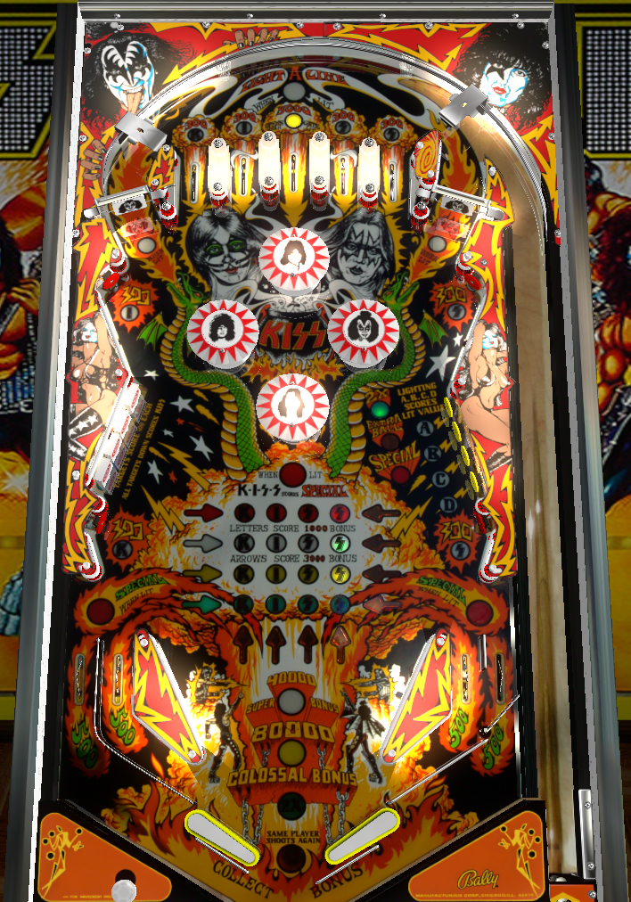

Not to be confused with Kiss (Stern Pinball, 2015).
Try to go for the center top lane is frequently as possible. Get back to the top of the playfield through the spinners on either side. Completing A-B-C-D on the right lights 2X bonus.
There are 4 ways to get KISS letters:
Each KISS letter is worth 1,000 points in bonus. Each finished KISS spelling is worth an additional 3,000 bonus. Also, finishing a column of a letter scores 3,000 more points in bonus. Note, though, that letters cannot be collected in advance: if you have K and I already, you cannot collect another K until picking up both S's. Note that the two S's are unique; the top right standup gives the first S, and the bottom right standup gives the second.
Bonus builds throughout the entire game. Spelling KISS 4 times lights the 40,000 point super bonus and unlights the grid, allowing KISS to be spelled more. Spelling KISS 4 more times converts the super bonus into the 80,000 point Colossal Bonus and unlights the grid again. Spelling KISS 4 more times after that maxes the bonus at 120,000 points, lights one out lane alternately for special, and also lights "KISS scores Special when lit". When the latter is lit, the top center lane and left drop target bank no longer spot a spelling of KISS.
Due to the positioning of the center top lane and the topmost bumper, it's possible to get up and down action through the center top lane, spotting KISS completions repeatedly. It is even possible to complete all three boards (12 KISS completions) in a single trip to the top lanes in this way.
The spinners are worth 100 points per spin. Going through the top center lane lights one of the spinners alternately for 1,000 points per spin. When going back to the top of the playfield to try for more trips to the top center lane, try to go up the side with the lit spinner. Note that it's quite a precise shot to go between the bumpers and miss the post to the outside of the spinner.
Each target down scores 500 points. Competing the bank finishes the current KISS line.
Hitting a standup target lights it. Completing A-B-C-D once lights 2X bonus for that ball. The second completion awards an extra ball, and the third awards a special.
There is no bonus multiplier beyond 2X, and bonus multiplier does not carry over from ball to ball.
In competition mode, extra ball is worth 25,000 points, and special is worth 50,000.

All copyrighted names and terms in this document belong to their respective owners. The information provided in this document is for educational purposes only and no infringement is intended.
Back to top To game list To main page